CRVI001354Ruth Asawa - Untitled (S.237, Hanging Six-Lobed, Interlocking Continuous Form)
Ruth Asawa · c. 1958 · hanging sculpture, enameled copper and brass wire · 1958
Ruth Asawa · c. 1958 · hanging sculpture, enameled copper and brass wire · 1958

CRVI001357Ruth Asawa - Untitled (S.055, Hanging Asymmetrical Nine Interlocking Bubbles)
Ruth Asawa · c. 1955 · hanging sculpture, galvanized steel, enameled copper and brass wire · 1955
Ruth Asawa · c. 1955 · hanging sculpture, galvanized steel, enameled copper and brass wire · 1955

CRVI001388Ruth Asawa - Untitled (S.693, Hanging Six-Lobed, Two-Part, Discontinuous Surface with a Sphere in the First Lobe)
Ruth Asawa · c. 1956 · hanging sculpture, brass and iron wire · photograph by Dan Bradica · 1956
Ruth Asawa · c. 1956 · hanging sculpture, brass and iron wire · photograph by Dan Bradica · 1956

CRVI001403Duane Hanson - Woman with Dog
Duane Hanson · 1977 · Whitney Museum of American Art · 1977
Duane Hanson · 1977 · Whitney Museum of American Art · 1977

CRVI001404Duane Hanson - Old Couple on a Bench
Duane Hanson · 1995 · polychromed bronze and mixed media · 1995
Duane Hanson · 1995 · polychromed bronze and mixed media · 1995

CRVI001405Duane Hanson - Bodybuilder
Duane Hanson · 1989 · designed 1989, executed 1992 · bronze, polychromed · 1989
Duane Hanson · 1989 · designed 1989, executed 1992 · bronze, polychromed · 1989

CRVI001406Duane Hanson - Baton Twirler
Duane Hanson · 1971 · 1971
Duane Hanson · 1971 · 1971

CRVI001407Duane Hanson - Man on a Bench
Duane Hanson ·
Duane Hanson ·

CRVI001421Maurizio Cattelan - America
2016
2016

CRVI001491Sophie Taeuber-Arp - Dada Head
1920
1920

CRVI001780Atsuko Tanaka - Electric Dress
1956
1956

CRVI001797Robert Rauschenberg - Monogram
1955
1955

CRVI001801Arman - Violins

CRVI001834Richard Anuszkiewicz - Spring Mix
2000
2000

CRVI001858Nam June Paik - Robot with television screens

CRVI001859Nam June Paik - Magnet TV

CRVI001864Donald Judd - Untitled
1968
1968

CRVI001865Donald Judd - Untitled
1966
1966

CRVI001866Donald Judd - Untitled
1969
1969

CRVI001867Dan Flavin - Untitled

CRVI001868Dan Flavin - "monument" for V. Tatlin
1964
1964

CRVI001869Dan Flavin - Untitled (to Don Judd, Colorist) 1–5
1987
1987

CRVI001870Carl Andre - Belgica Blue Field
1989
1989

CRVI001879Larry Bell - Untitled
1962
1962

CRVI001880Larry Bell - Glass installation

CRVI001881Larry Bell - Untitled 2 x 3
2021
2021

CRVI001882Larry Bell - Glass installation

CRVI001883Michelangelo Pistoletto - Venus of the Rags
1967
1967

CRVI001891Joseph Kosuth - Five Words in Green Neon
1965
1965

CRVI001892Joseph Kosuth - Four Colors Four Words
1966
1966

CRVI001893Unidentified - Neon composition after Mondrian with text panels

CRVI001894Joseph Kosuth - One and Three Chairs
1965
1965

CRVI001895Joseph Kosuth - Text/Context
1979
1979

CRVI001901Unidentified - Blue shaped panel

CRVI001903Unidentified - White stepped relief

CRVI001912Walter De Maria - Triangle, Circle, Square
1972
1972

CRVI001913James Turrell - Pullen (White)
1967
1967

CRVI001914James Turrell - Raethro (Red)
1968
1968

CRVI001915James Turrell - Juke (Green)
1968
1968

CRVI001916James Turrell - Raethro II (Green)
1969
1969

CRVI001917James Turrell - Acro (Red)
Corner projection · 1968
Corner projection · 1968

CRVI001918James Turrell - Munson (Blue)
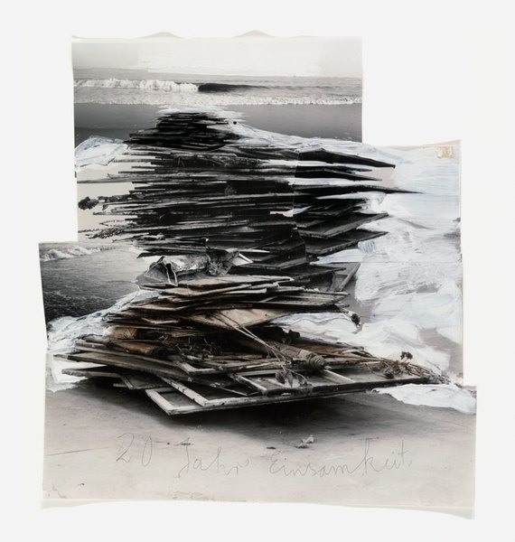
CRVI001925Anselm Kiefer - 20 Years of Solitude
1993
1993

CRVI001934Damien Hirst - God Alone Knows
2007
2007

CRVI001935Unidentified - Stuffed forms on a chair
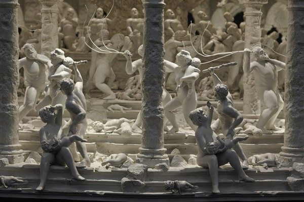
CRVI001940Mat Collishaw - All Things Fall
Detail · 2014–2017
Detail · 2014–2017
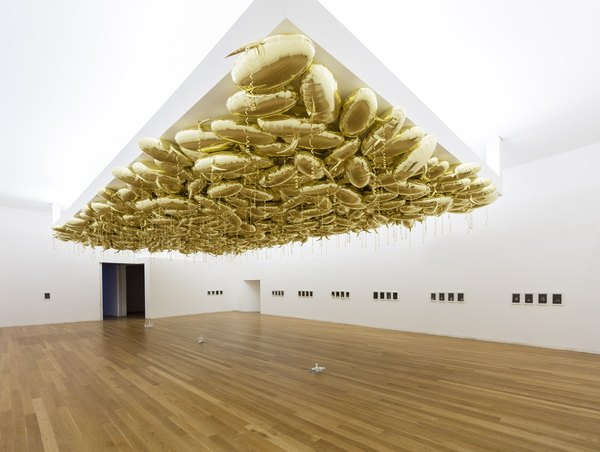
CRVI001941Unidentified - Gilded canopy, installation view

CRVI001942Unidentified - Neon Rhythm
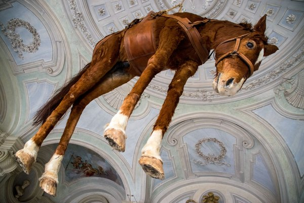
CRVI001945Unidentified - Suspended horse
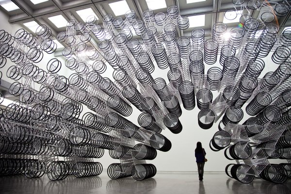
CRVI001947Ai Weiwei - Forever Bicycles
2011
2011
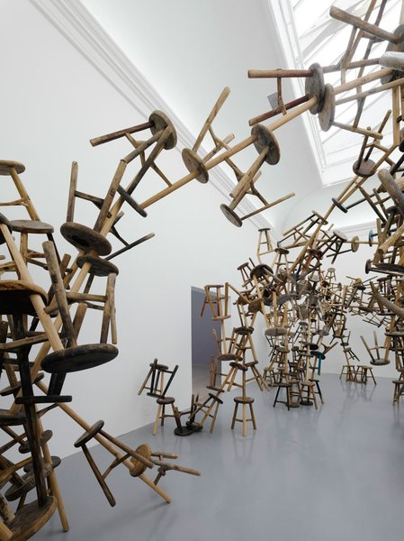
CRVI001948Ai Weiwei - Installation, German Pavilion, Venice Biennale
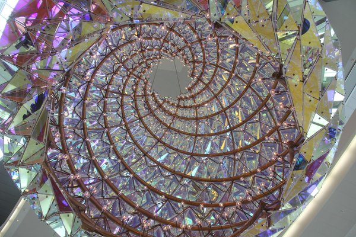
CRVI001949Unidentified - Chandelier, Copenhagen Opera House

CRVI001962Theaster Gates - Standing Throne 4
2012
2012

CRVI001998Yinka Shonibare - Seated figure in Dutch wax cloth
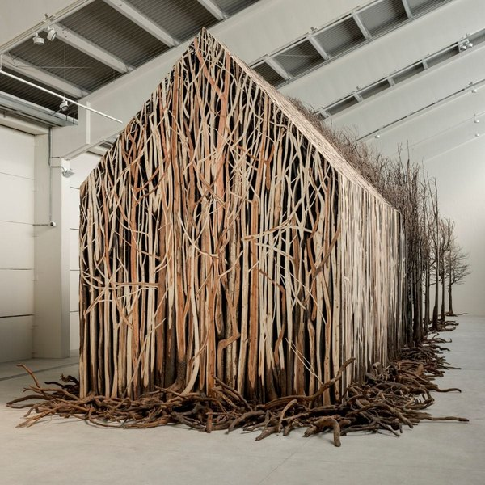
CRVI002005Doris Salcedo - Installation of branches
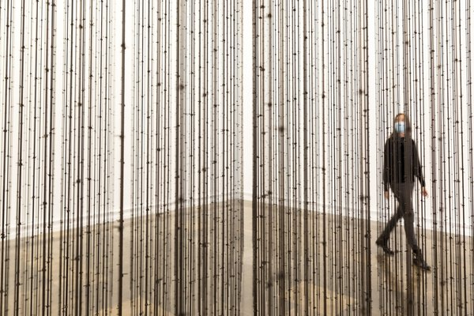
CRVI002006Mona Hatoum - Impenetrable
1999
1999
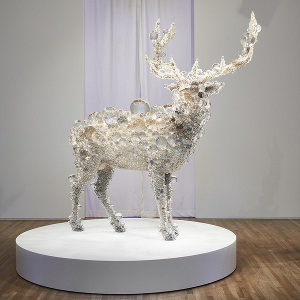
CRVI002012Kohei Nawa - PixCell-Deer
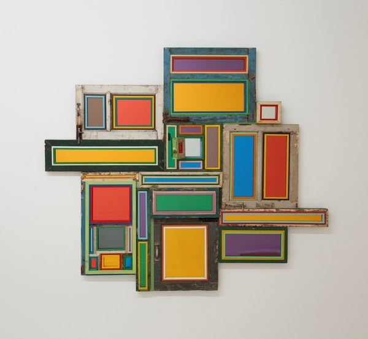
CRVI002014Unidentified - Assemblage of painted frames

CRVI002021Subodh Gupta - Untitled (egg)
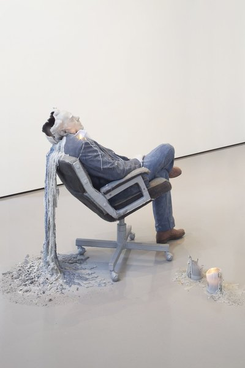
CRVI002023Unidentified - Melting figure on an office chair
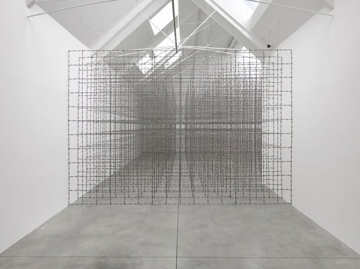
CRVI002064Santiago Sierra - Installation view
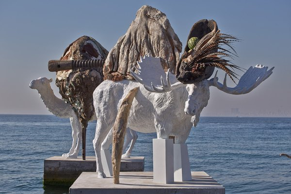
CRVI002067Adrián Villar Rojas - Sculptures at the water's edge

CRVI002068Adrián Villar Rojas - Sculpture on a floating plinth

CRVI002071Jordan Wolfson - Coloured sculpture
2016
2016

CRVI002072Jordan Wolfson - Untitled

CRVI002079Lizzie Fitch and Ryan Trecartin - Game Ampersand
2015
2015

CRVI002080Lizzie Fitch and Ryan Trecartin - Installation view

CRVI002081Camille Henrot - Installation view
2025
2025
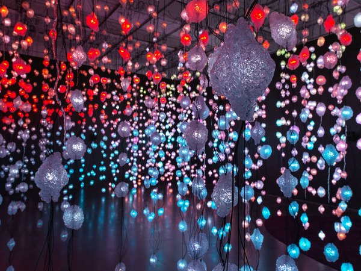
CRVI002083Unidentified - Light installation with suspended lamps

CRVI002084Unidentified - Light installation, gallery view

CRVI002102Piero Manzoni - Merda d'artista (Artist's Shit)
1961
1961

CRVI002110Christian Boltanski - Installation with hung clothing

CRVI002127Bruce Nauman - My Name As Though It Were Written on the Surface of the Moon
1968
1968

CRVI002128Bruce Nauman - Double Poke in the Eye II

CRVI002129Ed Kienholz - Installation view, Schirn Kunsthalle

CRVI002135Hannah Wilke - Untitled

CRVI002141Mike Kelley - Untitled

CRVI002144Richard Prince - Untitled (car hood)

CRVI002155Robert Gober - Untitled
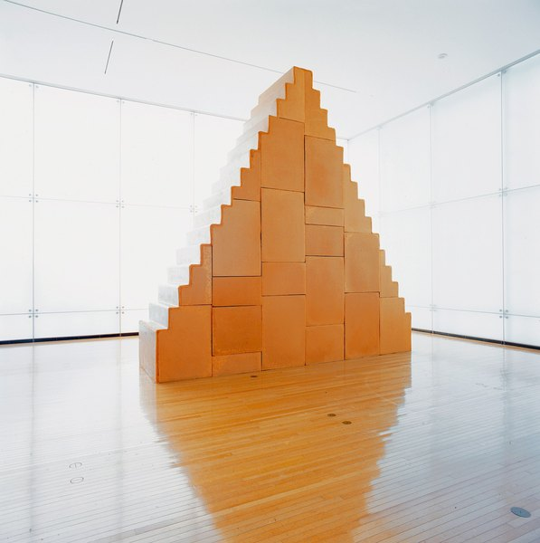
CRVI002185Wolfgang Laib - Zikkurat
2000
2000
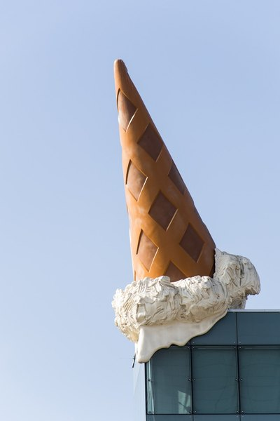
CRVI002248Claes Oldenburg and Coosje van Bruggen - Dropped Cone
2001
2001

CRVI002249Claes Oldenburg and Coosje van Bruggen - Shuttlecocks
1994
1994

CRVI002251Claes Oldenburg and Coosje van Bruggen - Saw, Sawing
1996
1996

CRVI002253Claes Oldenburg - Shoestring Potatoes Spilling from a Bag
1966
1966

CRVI002269Nam June Paik - Untitled
2005
2005

CRVI002284Damien Hirst - Saint Sebastian, Exquisite Pain
2007
2007

CRVI002285Damien Hirst - The Physical Impossibility of Death in the Mind of Someone Living
1991
1991

CRVI002286Damien Hirst - Mother and Child (Divided)
1993
1993
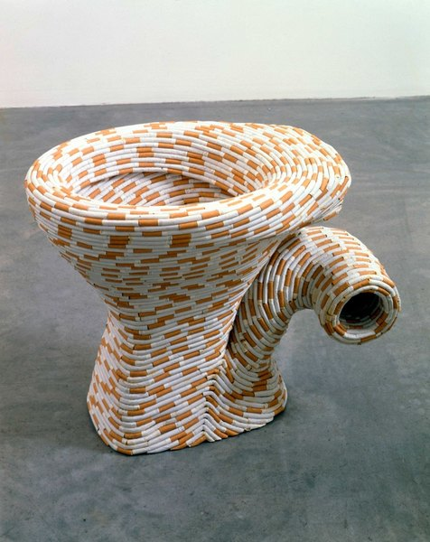
CRVI002287Sarah Lucas - Nature Abhors a Vacuum
1998
1998

CRVI002294Jeff Koons - Amore
1988
1988

CRVI002295Jeff Koons - Bear and Policeman
1988
1988

CRVI002296Jeff Koons - String of Puppies
1988
1988

CRVI002297Jeff Koons - One Ball Total Equilibrium Tank (Spalding Dr. J 241 Series)
1985
1985

CRVI002340Paul McCarthy - White Snow, wood sculpture

CRVI002341Paul McCarthy - Figure with rabbit head

CRVI002390Bruce Nauman - Double Poke in the Eye II
1985
1985
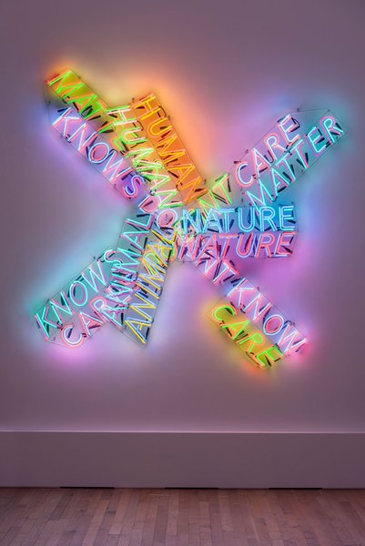
CRVI002391Bruce Nauman - Human Nature/Knows Doesn't Know
1983/1986
1983/1986

CRVI002392Bruce Nauman - Life Death/Knows Doesn't Know
1983
1983

CRVI002393Bruce Nauman - One Hundred Live and Die
1984
1984
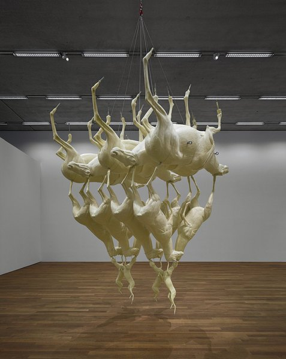
CRVI002396Bruce Nauman - Leaping Foxes
2018
2018